|
Mahdi Zaman
|
{kind=link}
Research & ProjectsI build systems and solutions for robots. During PhD, I have worked on robot perception, remote driving (both automated and humandriven), scaling vehicular communication and modeling systems for particular safety applications. My works published several research papers and a patent from the projects during my PhD. Representative papers are highlighted. |
V2X-aided Perception for Autonomous VehiclesWorking on improving scene understanding in machine vision to enable better decision-making. |
| 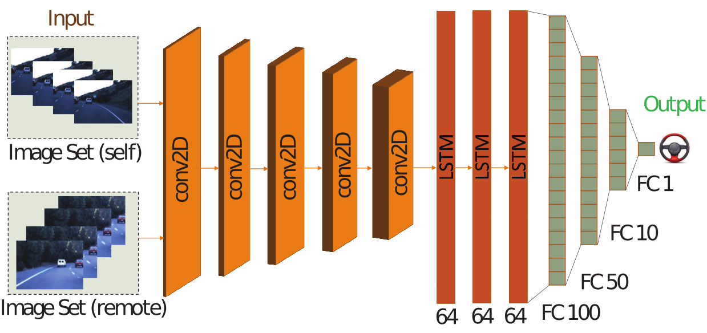 |
Rodolfo Valiente, Mahdi Zaman, Sedat Ozer, Yaser P Fallah Intelligent Vehicles (IV) Symposium, 2019 paper/ bibtex / poster We present a novel neural network model to leverage local (from on-board sensors) and look-ahead (via V2X) perception for efficient steering maneuver. It empowers the host vehicle with enhanced safety and prior knowledge for navigating a wide range of road scenarios. |
| 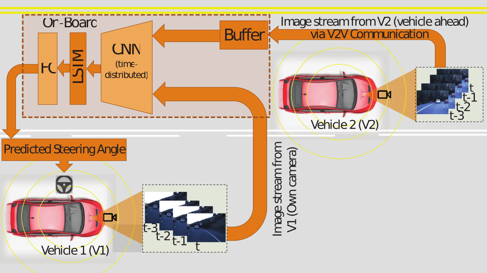 |
Rodolfo Valiente, Mahdi Zaman, Yaser P Fallah, Sedat Ozer Handbook of Pattern Recognition and Computer Vision, Chapter 2.10: pp. 365-384, 2020 |
Infrastructure-assisted TollingAn infrastructure-assisted transaction procedure is presented. Potential use-cases are: toll collection, road user charging, remote driving, automated valet parking etc. The application leverages high-speed communication via Cellular-V2X. Outcomes aim for development of SAE J3217 standard. |
| 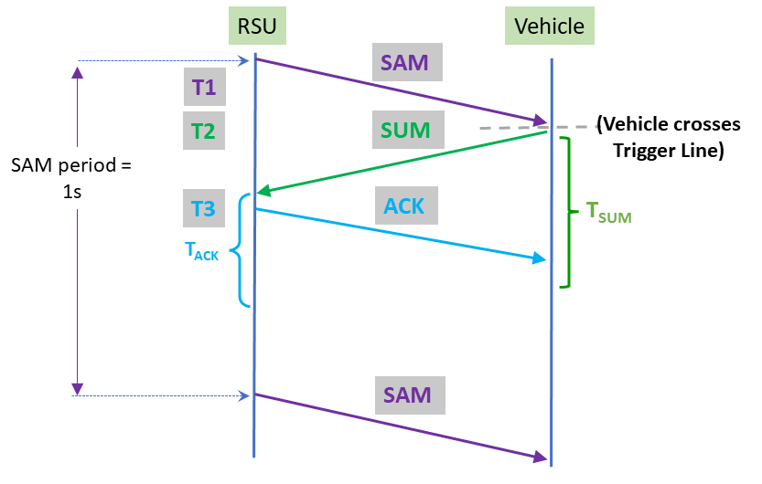 |
Mahdi Zaman, Md Saifuddin, Mahdi Razzaghpour, Yaser P Fallah 96th IEEE Vehicular Technology Conference (VTC), 2022 paper / bibtex / poster |
| 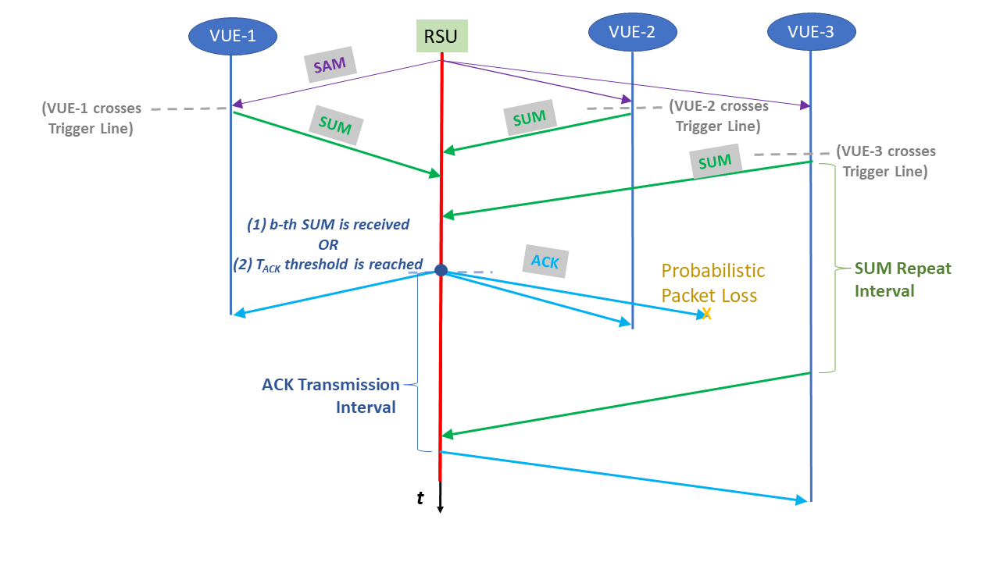 |
Mahdi Zaman, Md Saifuddin, Mahdi Razzaghpour, Yaser P Fallah, Jayanthi Rao 97th IEEE Vehicular Technology Conference (VTC), 2023 paper / bibtex |
Scaling V2XVehicle-to-everything (V2X) communication enables vehicles to share their cognition and constitute a form of mass intelligence in partial or fully autonomous traffic environment to overcome the limitations of a single agent planning in a decentralized fashion. Specifically, our proposed methods enable the 3GPP C-V2X communication technology to handle thousands of vehicles in heavily congested environments. |
| 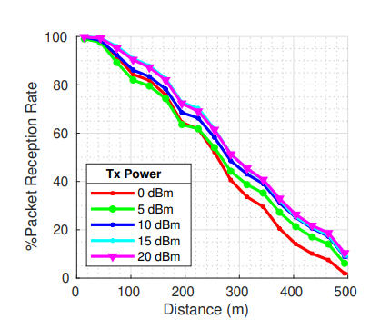 |
Md Saifuddin, Mahdi Zaman, Behrad Toghi, Yaser P Fallah, Jayanthi Rao IEEE Connected and Automated Vehicles Symposium (CAVS), 2020 paper / bibtex |
| 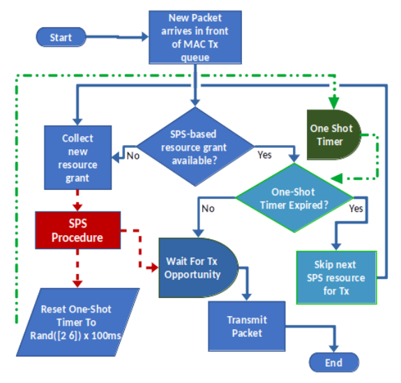 |
Md Saifuddin, Mahdi Zaman, Yaser P Fallah, Jayanthi Rao IEEE TechRxiv, 2023 paper / bibtex |
System Design & Modeling |
| 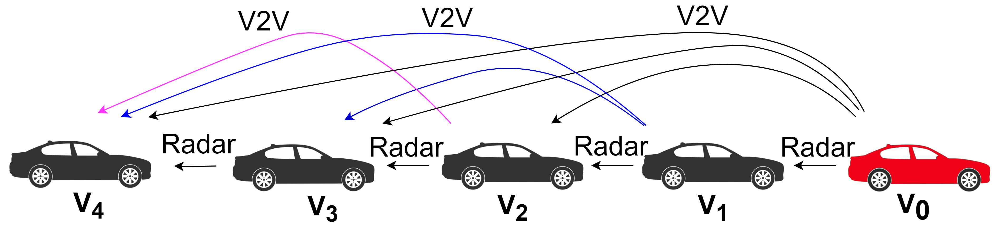 |
Mahdi Razzaghpour, Adwait Datar, Daniel Schneider, Mahdi Zaman, Herbert Werner, Hannes Frey, Javad Mohammadpour Velni, Yaser P Fallah IEEE International Systems Conference (SysCon), 2022 paper / arXiv / bibtex We model the inter-vehicle links in a platoon with a first-order Markov model to capture the prevalent temporal correlations for each link. |
| 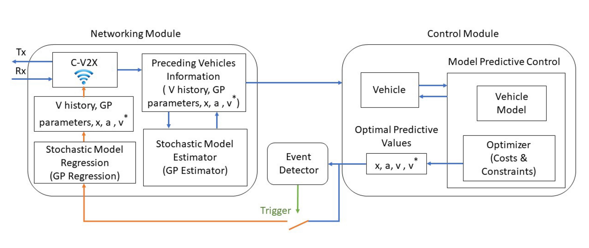 |
Mahdi Razzaghpour, Rodolfo Valiente, Mahdi Zaman, Yaser P Fallah IEEE Open Journal of Intelligent Transportation Systems, Vol. 4, pg 232-243, 2023 paper / arXiv / bibtex We leverage Model-Based Communication (MBC) and propose a solution that enables cooperative control of vehicle platoons under non-ideal communication scenarios. |
| 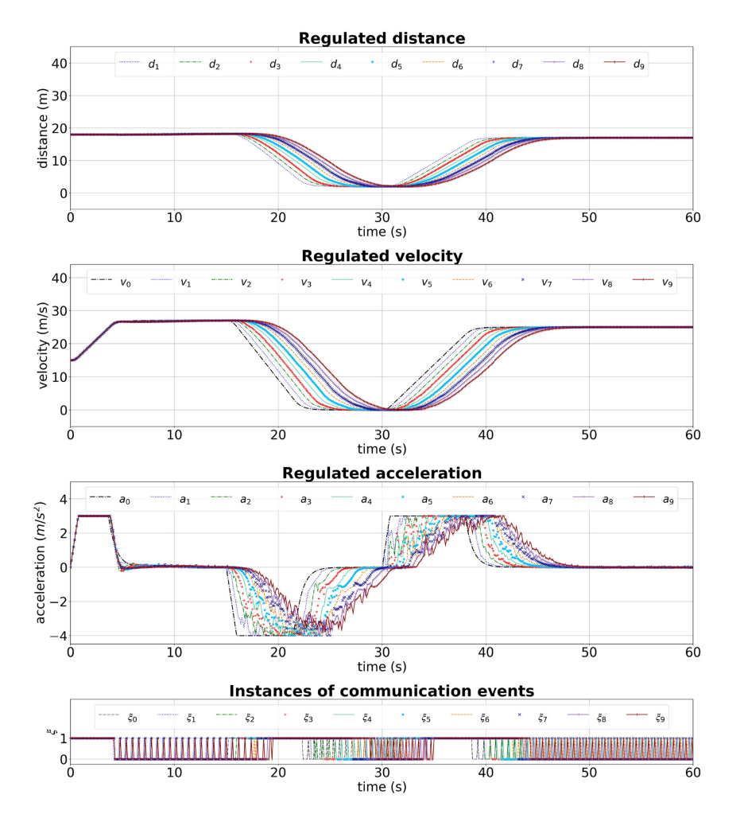 |
Mahdi Razzaghpour, Rodolfo Valiente, Mahdi Zaman, Yaser P Fallah arXiv / bibtex We propose a combination of control-aware communication and model-based communication. Our proposed solution reduces communication overhead by ~47% while maintaining nearly the same level of efficiency (less than 1% speed deviation) in cooperative adaptive cruise control. |
| 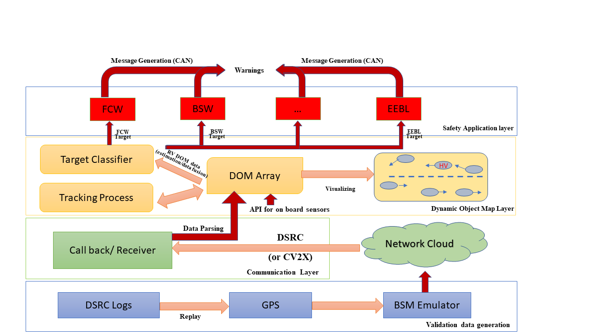 |
Mahdi Razzaghpour, Rodolfo Valiente, Mahdi Zaman, Yaser P Fallah IEEE Open Journal of Intelligent Transportation Systems, Vol. 4, pg 232-243, 2023 SAE Mobilus / bibtex We propose a modular architecture with separate subsystems for application and perception with a novel non-parametric Bayesian inference-based prediction method. We validate the architecture in conjunction with the prediction mechanism with real environment using Denso On-Board-Unit (OBU). The proposed system shows enhanced immunity to communication loss in V2X channel. |
| 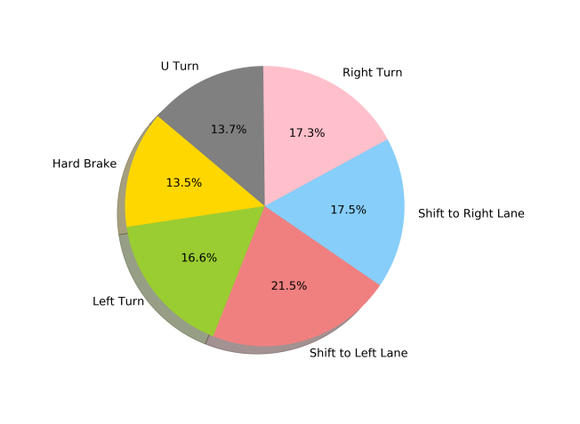 |
Behrad Toghi, Divas Grover, Mahdi Razzaghpour, Rajat Jain, Rodolfo Valiente, Mahdi Zaman, Ghayoor Shah, Yaser P Fallah IEEE Connected and Automated Vehicles Symposium (CAVS), 2020 paper / arXiv / bibtex We introduce a real-world maneuver-based driving dataset that is collected during our urban driving data collection campaign. |
Patent |
| 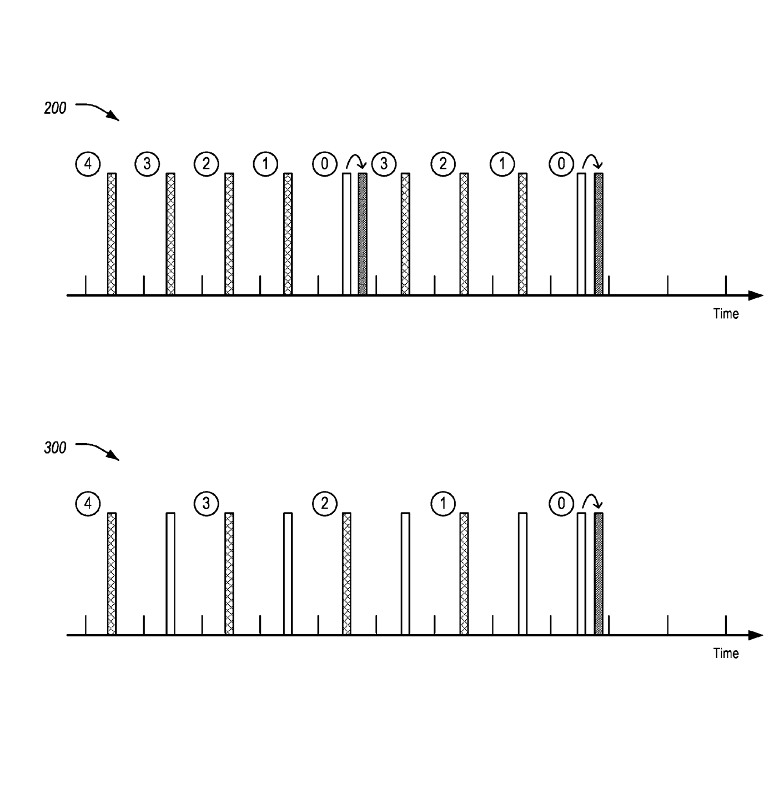 |
Jayanthi Rao, Ivan Vukovic, Yaser P Fallah, Md Saifuddin, Mahdi Zaman US 2023/0057331 A1 Details We developed a novel 1-shot transmission scheme for Semi-Persistent Scheduling (SPS) that improves the latency and reliability of connected messages, independent of SPS-allocated resources. |
Miscellanea |

|
Instructor, Spring 2023, UCF |
|
Originally stolen from Jon Barron's amazing website (source code). Feel free to repurpose. |